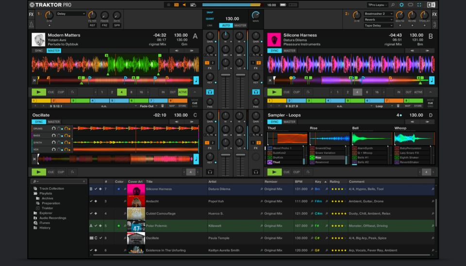
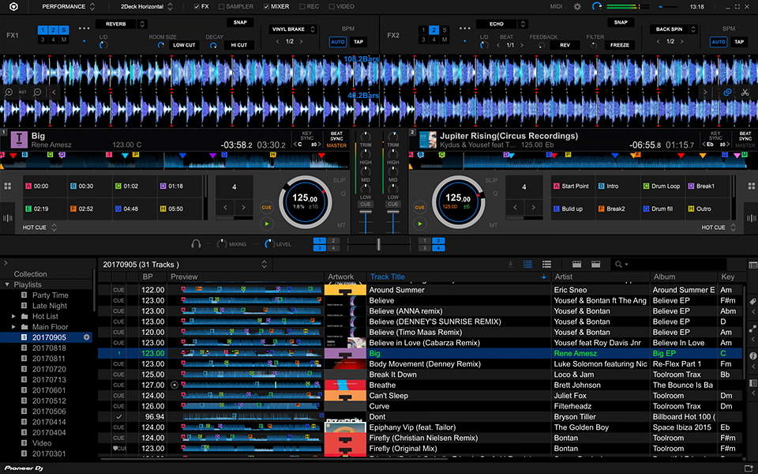

Softwares
copyright:musicradar.com
Along with the hardware, softwares are the most basic thing you need for DJing. Depending on what kinds of software you use, the output of your mix can change. There are simple softwares that allow you to manipulate tracks with limited functions. For begginers, these type of software will be easier to learn. However, as you dig deeper into Djing you will need more functions and more complicated softwares to create higher quality mixes.
Serato
copyright: serato.com
Serato is a well known software for DJing. Serato is known for its compatibilities vinyls which is more suitable for genres like Hip-Hop. For that reason, DJs who want to use vinyls and perform scratching prefer to use serato.
Traktor
copyright: nativeinstruments.com
Another well known software for DJing is Traktor. Traktor is one of the easiest and no-cost software you can have. However, this does not mean that this software is not professional. A lot of World-class professional DJs still use this software in concerts and festivals. Although it is greate software, it requires you to have hardware that must be compatible with traktor. You can buy DJ controllers made for Traktor.
Rekordbox
copyright: rekordbox.com
Rekordbox is a recent software made by a company named Pioneer. In big festivals and cocnerts, most of the professional DJs use CDJs and mixers from Pioneer. Rekordbox is the software that is compatible with CDJs and all the products made by pioneers. Many DJs chose to stick with Serato and Tracktor since they are more used to them but Rekordbox allow more compatibility with most used equipments. If you are thinking of performing in big festivals and concerts, choosing rekorbox will help you to get prepared.
Other softwares
Beside these big name softwares, there are a lot of other options you can choose. For instance, Virtual DJ is a easy and quick software you can have to start DJing. It is the simplist software you can choose with all the basic functions for mixing. Start messing around with it and if you think you are ready to dig deep into DJing, then you can start learning how to use professional softwares listed above.